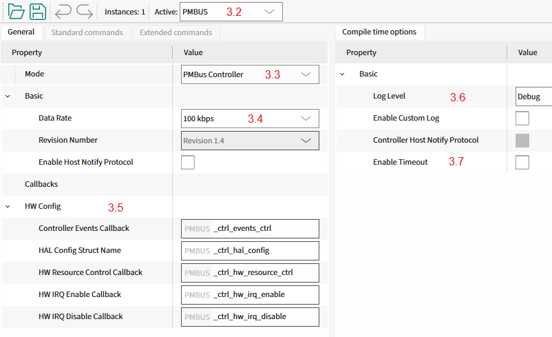

This section provides a guide to quickly get started with the PMBus middleware using the Solution personality. Namely: how to set up the PMBus middleware in your project, configure the necessary hardware, and implement the basic PMBus controller functionality.
Note: Testing the Controller mode functionality requires a second PMBus device operating in Target mode. Recommended: use the Target Mode Quick Start Guide (Using Solution Personality) to set up the PMBus Target device.
1. Add mtb-pmbus middleware to your project

- If you work in the ModusToolbox IDE, use the ModusToolbox Library Manager to add the mtb-pmbus middleware to your project. Otherwise, ensure that mtb-pmbus middleware is included into your project.
Note: Middleware uses printf() for logging purposes. To use printf() for the terminal output, add retarget-io middleware from the Library Manager or in any other way.
2. Configure SCB blocks, timeout Timer, GPIO pins
- Open the Device Configurator and go to the Solutions tab (#1.0).
- Add a new PMBus instance to your project (#1.1).
Note: If this project previously used manual PMBus configuration, follow the migration steps.
- Select a name for the newly created PMBus instance (e.g., PMBUS, #1.2).
- "I2C_HW" section (#1.3) - select:
- the desired SCB block
- the desired Clock for the selected SCB block
- the desired pins for SDA and SCL lines, the Device Configurator will automatically configure them into Open Drain mode.
- "Timeout Detection" section (#1.4) - select the timeout detection option and Clock for this option:
- TGS (Time Guard Support), uses the SCB block time guard feature to detect the timeout conditions on the I2C bus.
- TCPWM (Timer Counter Pulse Width Modulator), uses a dedicated timer to detect the timeout conditions on the I2C bus.
Note: The selection of the timeout detection option depends on the device.

- On the Peripherals tab (#2.0), enable the SCB block under Communication (#2.1), and select the UART personality (#2.2). Select the desired name for the SCB (#2.3). This block will be used for the debug output.
- Select the desired pins and clock for the SCB (#2.4). The other UART options can be set by default, see the screenshot.

3. Configure PMBus instance
- On the Solutions tab (#3.0), open the PMBus Configurator (#3.1).

- Set the operation mode of the PMBus instance (#3.2) to Controller (#3.3).
- Select the desired data rate (#3.4).
- Define the names of the Controller callbacks (#3.5) to be used in the code implementation.
- Set the log level to Debug (#3.6).
- Disable the PMBus timeout detection to make the example simpler (#3.7).

- Select File->Save to generate initialization code.
Warning: Important! Save the PMBus configuration using the PMBus Configurator.
4. Add PMBus controller code to your project
This section describes:
- the implementation of a PMBus Controller device using the Solution personality
- how to send Quick Command and Read 32 protocols with the CMD1(0x10) command to the PMBus target device by using dedicated protocol APIs
- how to use generic transfer API to send Write Byte protocol with PAGE(0x00) command and Write/Read Word with the CMD2(0x11) command.
Step 1. Include the necessary header files into the main.c file:
#include "mtb_pmbus.h"
#include "cybsp.h"
#include "cy_retarget_io.h"
Step 2. Set the project defines:
#define PMBUS_TARGET_ADDRESS (0x18U)
#define PMBUS_PAGE_CMD_CODE (0x00U)
#define PMBUS_TEST_CMD_1_CODE (0x10U)
#define PMBUS_TEST_CMD_2_CODE (0x11U)
#define PMBUS_TEST_PAGE_NUM (0x01U)
#define PMBUS_CTRL_TIMEOUT_US (1000000UL)
Step 3. Create variables for:
Debug the UART HAL object and context:
static cy_stc_scb_uart_context_t DEBUG_UART_context;
static mtb_hal_uart_t DEBUG_UART_hal_obj;
I2C context:
static cy_stc_scb_i2c_context_t i2c_pdl_context;
PMBus controller instance:
Controller instance structure.
Definition mtb_pmbus_ctrl.h:203
Step 4. Implement the I2C interrupt handler function:
static void PMBUS_i2c_isr(void)
{
}
void mtb_pmbus_ctrl_isr(mtb_pmbus_ctrl_stc_t *inst)
PMBus controller interrupt service routine.
Definition mtb_pmbus_ctrl_hal.c:51
Step 5. Implement the callback functions for:
Controlling I2C hardware resources (init, enable, disable) and enabling/disabling I2C interrupts:
{
{
Cy_SCB_I2C_Init(PMBUS_I2C_HW, &PMBUS_I2C_config, &i2c_pdl_context);
cy_stc_sysint_t i2c_isr_cfg =
{
.intrSrc = PMBUS_I2C_IRQ,
.intrPriority = 3U
};
Cy_SysInt_Init(&i2c_isr_cfg, PMBUS_i2c_isr);
printf("I2C hardware initialized\n\r");
}
{
Cy_SCB_I2C_Enable(PMBUS_I2C_HW);
printf("I2C hardware enabled\n\r");
}
{
Cy_SCB_I2C_Disable(PMBUS_I2C_HW, &i2c_pdl_context);
printf("I2C hardware disabled\n\r");
}
}
{
(void)event;
}
void PMBUS_ctrl_hw_irq_enable(void)
{
NVIC_EnableIRQ((IRQn_Type) PMBUS_I2C_IRQ);
}
void PMBUS_ctrl_hw_irq_disable(void)
{
NVIC_DisableIRQ((IRQn_Type) PMBUS_I2C_IRQ);
}
mtb_pmbus_ctrl_events_t
Controller events.
Definition mtb_pmbus_ctrl.h:79
mtb_pmbus_ctrl_hw_resources_ctrl_action_t
Events for HW initialization.
Definition mtb_pmbus_ctrl.h:123
@ MTB_PMBUS_CTRL_HW_RESOURCES_INIT
Initialize the HW resources.
Definition mtb_pmbus_ctrl.h:125
@ MTB_PMBUS_CTRL_HW_RESOURCES_ENABLE
Enable the I2C HW.
Definition mtb_pmbus_ctrl.h:127
@ MTB_PMBUS_CTRL_HW_RESOURCES_DISABLE
Disable the I2C HW.
Definition mtb_pmbus_ctrl.h:129
Step 6. Implement the PMBus controller hardware configuration structure:
{
.hw_ptr = PMBUS_I2C_HW,
.pdl_i2c_context = &i2c_pdl_context,
};
HAL Configuration structure for Controller.
Definition mtb_pmbus_ctrl_hal.h:54
Step 7. (From this step, add code to the main() function) Create variables for the result statuses:
cy_rslt_t result;
cy_en_scb_uart_status_t init_status;
Step 8. Initialize the device and board peripherals:
result = cybsp_init();
if (result != CY_RSLT_SUCCESS)
{
CY_ASSERT(0);
}
Step 9. Initialize the UART for the debug output:
init_status = Cy_SCB_UART_Init(DEBUG_UART_HW, &DEBUG_UART_config, &DEBUG_UART_context);
if (init_status != CY_SCB_UART_SUCCESS)
{
CY_ASSERT(0);
}
Cy_SCB_UART_Enable(DEBUG_UART_HW);
result = mtb_hal_uart_setup(&DEBUG_UART_hal_obj, &DEBUG_UART_hal_config,
&DEBUG_UART_context, NULL);
if (result != CY_RSLT_SUCCESS)
{
CY_ASSERT(0);
}
result = cy_retarget_io_init(&DEBUG_UART_hal_obj);
if (result != CY_RSLT_SUCCESS)
{
CY_ASSERT(0);
}
printf("\x1b[2J\x1b[;H");
printf("************************************************************\r\n");
printf("PMBus Controller Quick Start Guide CE\r\n");
printf("************************************************************\r\n\n");
Step 10. Enable the global interrupts:
Step 11. Initialize and enable the PMBus Controller middleware instance:
{
printf("PMBus Controller initialization failed! Status: %d\n\r", status);
CY_ASSERT(0);
}
else
{
printf("PMBus Controller initialized successfully\n\r");
printf("PMBus Controller enabled\n\r");
}
mtb_pmbus_ctrl_status_t
Controller statuses.
Definition mtb_pmbus_ctrl.h:58
@ MTB_PMBUS_CTRL_STATUS_SUCCESS
Correct status, No error.
Definition mtb_pmbus_ctrl.h:60
mtb_pmbus_ctrl_status_t mtb_pmbus_ctrl_init(mtb_pmbus_ctrl_stc_t *inst, mtb_pmbus_ctrl_cfg_t *cfg)
Initialize the PMBus Instance in Controller mode.
Definition mtb_pmbus_ctrl.c:81
void mtb_pmbus_ctrl_enable(mtb_pmbus_ctrl_stc_t *inst)
Enable PMBus instance in Controller mode.
Definition mtb_pmbus_ctrl.c:101
Step 12. Execute the Quick Command protocol example:
printf("\n\r");
printf("====================================\n\r");
printf("Starting PMBus Controller Examples\n\r");
printf("====================================\n\r");
Cy_SysLib_Delay(1000U);
printf("\n\r--- Example 1: Quick Command ---\n\r");
printf("Sending Quick Command to address 0x%02X (toggles target LED)\n\r", PMBUS_TARGET_ADDRESS);
{
{
printf("Quick Command sent successfully\n\r");
}
{
printf("Quick Command timeout\n\r");
}
else
{
printf("Quick Command failed with status: %d\n\r", status);
}
}
else
{
printf("Quick Command API failed with status: %d\n\r", status);
}
Cy_SysLib_Delay(500U);
@ MTB_PMBUS_CTRL_STATUS_IS_READY
The controller is ready to send data.
Definition mtb_pmbus_ctrl.h:66
@ MTB_PMBUS_CTRL_STATUS_TIMEOUT
Timeout.
Definition mtb_pmbus_ctrl.h:72
mtb_pmbus_ctrl_status_t mtb_pmbus_ctrl_wait_cmpl(mtb_pmbus_ctrl_stc_t *inst, uint32_t timeout)
Wait for the transfer completion with a timeout.
Definition mtb_pmbus_ctrl.c:227
mtb_pmbus_ctrl_status_t mtb_pmbus_ctrl_ex_quick_cmd(mtb_pmbus_ctrl_stc_t *inst, uint8_t addr)
Execute SMBus Quick Command protocol.
Definition mtb_pmbus_ctrl.c:578
Step 13. Execute the Read 32 protocol example:
printf("\n\r--- Example 2: Read 32 Protocol ---\n\r");
printf("Reading 4 bytes from CMD1 (0x%02X) - LED toggle counter\n\r", PMBUS_TEST_CMD_1_CODE);
uint8_t read32_buffer[4U] = {0U};
PMBUS_TEST_CMD_1_CODE, read32_buffer, false);
{
{
uint32_t counter_value = read32_buffer[0U] | (read32_buffer[1U] << 8) |
(read32_buffer[2U] << 16) | (read32_buffer[3U] << 24);
printf("Read 32 completed successfully\n\r");
printf("Counter value: %" PRIu32 "\n\r", counter_value);
}
{
printf("Read 32 timeout\n\r");
}
else
{
printf("Read 32 failed with status: %d\n\r", status);
}
}
else
{
printf("Read 32 API failed with status: %d\n\r", status);
}
Cy_SysLib_Delay(500U);
mtb_pmbus_ctrl_status_t mtb_pmbus_ctrl_ex_read_32(mtb_pmbus_ctrl_stc_t *inst, uint8_t addr, uint32_t cmd_code, uint8_t *data, bool pec)
Execute SMBus Read 32 protocol.
Definition mtb_pmbus_ctrl.c:998
Step 14. Execute the generic transfer example - Send PAGE command:
printf("\n\r--- Example 3: Generic Transfer API ---\n\r");
printf("Setting PAGE to %d using generic transfer\n\r", PMBUS_TEST_PAGE_NUM);
uint8_t page_data[2U];
page_data[0U] = PMBUS_PAGE_CMD_CODE;
page_data[1U] = PMBUS_TEST_PAGE_NUM;
transfer_cfg.
addr = PMBUS_TARGET_ADDRESS;
transfer_cfg.
data = page_data;
{
{
printf("PAGE command sent successfully\n\r");
}
{
printf("PAGE command timeout\n\r");
}
else
{
printf("PAGE command failed with status: %d\n\r", status);
}
}
else
{
printf("PAGE command API failed with status: %d\n\r", status);
}
Cy_SysLib_Delay(500U);
uint16_t rd_size
The size of the read part of the transfer.
Definition mtb_pmbus_ctrl.h:196
bool execute_stop
True - execute the stop condition at the end of transfer, False - Otherwise.
Definition mtb_pmbus_ctrl.h:198
uint16_t wr_size
The size of the write part of the transfer.
Definition mtb_pmbus_ctrl.h:194
uint8_t * data
The pointer to the data buffer.
Definition mtb_pmbus_ctrl.h:190
uint8_t addr
The target address.
Definition mtb_pmbus_ctrl.h:192
Transfer configuration structure.
Definition mtb_pmbus_ctrl.h:188
mtb_pmbus_ctrl_status_t mtb_pmbus_ctrl_execute_transfer(mtb_pmbus_ctrl_stc_t *inst, mtb_pmbus_ctrl_stc_transfer_cfg_t *cfg)
Execute a generic PMBus transfer.
Definition mtb_pmbus_ctrl.c:138
Step 15. Execute the generic transfer example - Write Word to CMD2:
printf("\n\rWriting 0xABCD to CMD2 (0x%02X) using generic transfer\n\r", PMBUS_TEST_CMD_2_CODE);
uint8_t write_data[3U];
write_data[0U] = PMBUS_TEST_CMD_2_CODE;
write_data[1U] = 0xABU;
write_data[2U] = 0xCDU;
transfer_cfg.
data = write_data;
{
{
printf("Write Word completed successfully\n\r");
}
{
printf("Write Word timeout\n\r");
}
else
{
printf("Write Word failed with status: %d\n\r", status);
}
}
else
{
printf("Write Word API failed with status: %d\n\r", status);
}
Cy_SysLib_Delay(500U);
Step 16. Execute the generic transfer example - Read Word from CMD2:
printf("\n\rReading from CMD2 (0x%02X) using generic transfer\n\r", PMBUS_TEST_CMD_2_CODE);
uint8_t read_data[3U];
read_data[0U] = PMBUS_TEST_CMD_2_CODE;
transfer_cfg.
data = read_data;
{
{
printf("Read Word completed successfully\n\r");
uint16_t word_value = read_data[1U] | (read_data[0U] << 8);
printf("Word value: 0x%04" PRIX16 "\n\r", word_value);
}
{
printf("Read Word timeout\n\r");
}
else
{
printf("Read Word failed with status: %d\n\r", status);
}
}
else
{
printf("Read Word API failed with status: %d\n\r", status);
}
printf("\n\r====================================\n\r");
printf("Examples completed\n\r");
printf("====================================\n\r");
5. Verify Controller Mode Workability
See Verify Controller Mode Workability for verification steps.